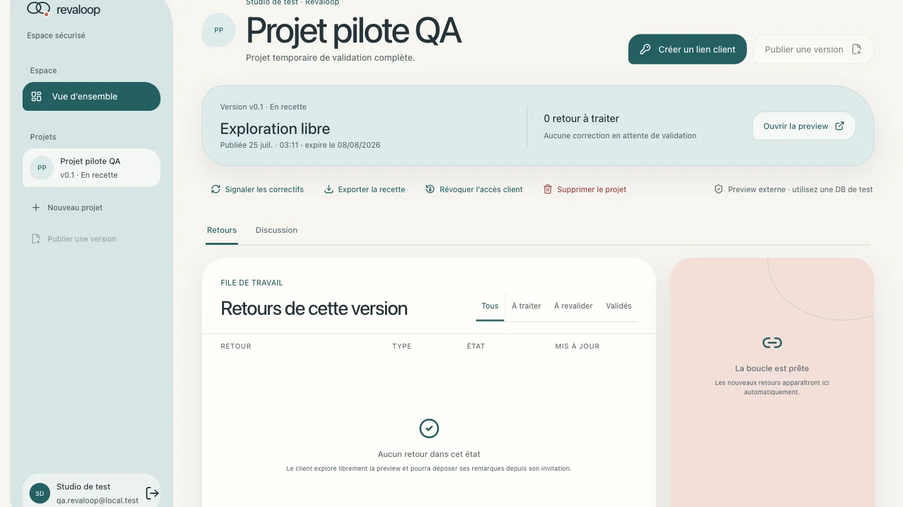
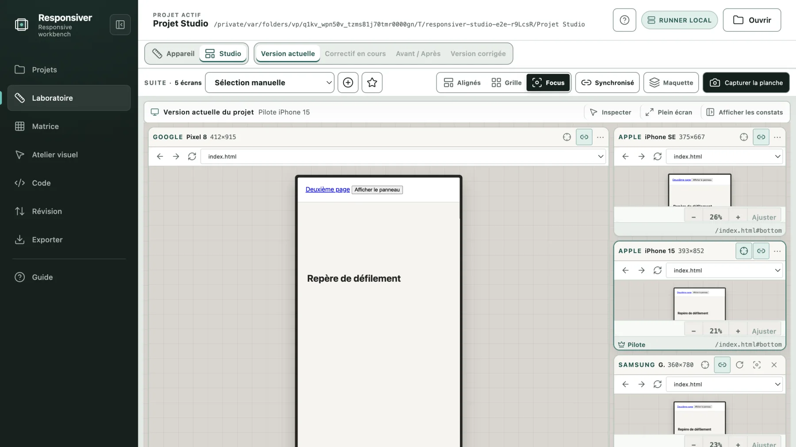
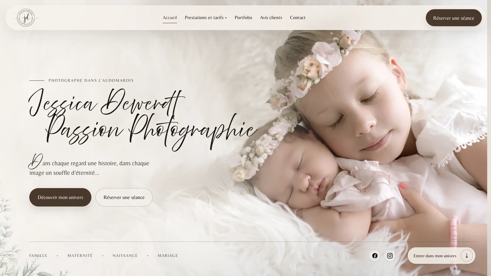

Revaloop · Produit en développement
CAS 01 · IA, sécurité & gouvernance
ENCADRER L'AGENT, PAS SEULEMENT L'UTILISER.
Ma veille sur les agents de développement nourrit surtout une question de
contrôle. Dans Revaloop, cela se traduit par des versions identifiables,
des invitations temporaires, des retours traçables et une approbation
impossible tant qu'un point reste ouvert.
- Accès limités, révocables et explicitement autorisés.
- Décisions client conservées avec la version concernée.
- Fonctions terminées et prochaines étapes clairement séparées.
Voir Revaloop dans les projets

Responsiver · Application desktop
CAS 02 · Local-first & validation
REMPLACER L'INTUITION PAR UNE RÉGRESSION REPRODUCTIBLE.
Les outils repérés dans ma veille ne sont intéressants que s'ils rendent
le diagnostic plus fiable. Responsiver garde les sources sur la machine,
compare plusieurs écrans et transforme une correction visuelle en scénario
vérifiable sur plusieurs routes, tailles et états.
- Sources locales et propositions réversibles.
- Comparaison avant/après avant toute écriture.
- Matrice Playwright pour limiter les régressions.
Voir Responsiver dans les projets

Jessica Dew · Site client livré
CAS 03 · UI, sécurité & exploitation
FAIRE DE L'INSPIRATION UN PRODUIT MAINTENU.
Les bibliothèques UI et les références visuelles élargissent les pistes ;
elles ne décident pas à la place de la marque. Le site Jessica Dew associe
ainsi une direction éditoriale propre à un formulaire sécurisé, une
configuration OVHcloud maîtrisée et une procédure de mise en ligne réversible.
- Identité visuelle adaptée au métier de la cliente.
- Validation serveur, anti-abus et envoi SMTP authentifié.
- Recette, surveillance et retour arrière après livraison.
Voir Jessica Dew dans les projets